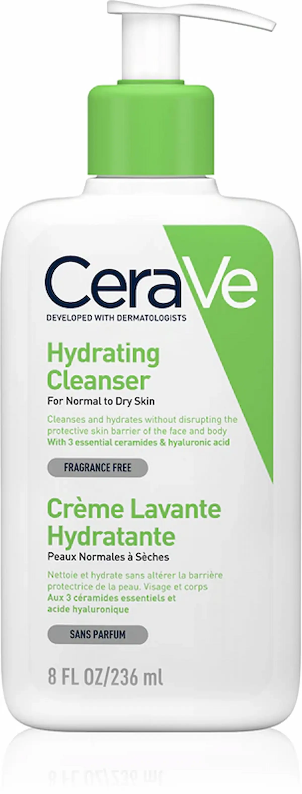

Surfactanții agresivi pot afecta bariera lipidică a pielii.
Surfactanții agresivi pot afecta bariera lipidică a pielii.
Ce sunt surfactanții (explicat simplu)?
Surfactanții (agenți tensioactivi) sunt ingredientele responsabile de curățarea pielii. Ei permit gelurilor de curățare, spumelor și șampoanelor să îndepărteze impuritățile, sebumul și urmele de machiaj.
Caracteristica lor principală este capacitatea de a interacționa atât cu apa, cât și cu grăsimile. Datorită acestui lucru, surfactanții dizolvă murdăria și se clătesc ușor, lăsând pielea curată.
Totuși, este important de știut că nu toți surfactanții sunt la fel. Unii acționează delicat și respectă echilibrul pielii, în timp ce alții pot fi prea agresivi, mai ales pentru pielea uscată, deshidratată sau sensibilă.


De ce surfactanții pot afecta pielea?
Unii surfactanți curăță pielea prea intens. Împreună cu impuritățile, aceștia elimină și lipidele naturale, esențiale pentru protecția și menținerea hidratării pielii.
Ca rezultat, bariera cutanată este afectată: pielea pierde mai rapid hidratarea, devine uscată, deshidratată și mai sensibilă. Pot apărea senzația de piele care „ține”, aspect tern, descuamare și reactivitate crescută.
În cazul utilizării frecvente a produselor de curățare agresive, pielea se regenerează mai greu și reacționează mai puternic la factorii externi — aer rece, apă dură, vânt și variații de temperatură. Acest lucru este mai evident în sezonul rece și în condiții de aer uscat în interior.


Surfactanți agresivi: SLS și SLES
Cei mai frecvent utilizați surfactanți agresivi sunt Sodium Lauryl Sulfate (SLS) și Sodium Laureth Sulfate (SLES). Aceștia sunt des întâlniți în produsele de curățare datorită capacității lor de a produce o spumă bogată și de a îndepărta eficient impuritățile.
Totuși, această putere mare de curățare poate avea un efect negativ asupra pielii. Acești compuși pot afecta bariera lipidică, ceea ce duce la pierderea hidratării și la slăbirea funcției de protecție a pielii.
Utilizate frecvent, produsele care conțin astfel de surfactanți pot provoca uscăciune, senzație de piele care „ține”, aspect tern și sensibilitate crescută. De aceea, pentru utilizarea zilnică este recomandat să alegi formule mai blânde, mai ales dacă ai pielea uscată sau sensibilă.


Surfactanți blânzi: care sunt siguri pentru piele?
Spre deosebire de componentele agresive, surfactanții blânzi acționează delicat: curăță pielea fără a afecta bariera de protecție și fără a provoca uscăciune accentuată. Sunt ideali pentru utilizarea zilnică, mai ales în cazul pielii deshidratate, sensibile sau iritate.
Acești surfactanți acționează mai puțin intens, dar mai fiziologic — îndepărtează impuritățile păstrând în același timp stratul lipidic al pielii. Astfel, după curățare nu apare senzația de disconfort, iar pielea rămâne mai hidratată și mai confortabilă.
Printre cei mai utilizați surfactanți blânzi se numără: Coco-Glucoside, Decyl Glucoside, Lauryl Glucoside, Disodium Cocoyl Glutamate și Sodium Cocoyl Isethionate. Aceștia sunt frecvent folosiți în produsele dedicate pielii sensibile și curățării delicate.
Atunci când alegi un produs de curățare, nu este suficient să eviți surfactanții agresivi — este important să analizezi și formula generală. Ingredientele hidratante precum glicerina și pantenolul, dar și lipidele, ajută la susținerea barierei pielii și la reducerea riscului de uscăciune.


Cum să alegi un produs de curățare: checklist
Alegerea corectă a unui produs de curățare este baza unei pieli sănătoase. Greșelile din etapa de curățare duc frecvent la uscăciune, senzație de piele care „ține” și afectarea barierei cutanate. Folosește acest checklist pentru a alege un produs potrivit tipului tău de piele.
1. Evită surfactanții agresivi
Verifică lista de ingrediente: dacă printre primele se află
SLS (Sodium Lauryl Sulfate) sau
SLES (Sodium Laureth Sulfate), produsul poate
usca pielea și poate crește sensibilitatea.
2. Alege agenți de curățare blânzi
Caută ingrediente precum
Coco-Glucoside,
Decyl Glucoside,
Sodium Cocoyl Isethionate — acestea curăță
delicat și nu afectează bariera pielii.
3. Fii atent(ă) la senzația după spălare
Dacă pielea devine uscată, tensionată sau „scârțâie” — este un
semn că produsul este prea agresiv și dezechilibrează pielea.
4. Caută ingrediente hidratante și calmante
Este un plus dacă formula conține
glicerină, pantenol,
niacinamidă — acestea ajută la menținerea
hidratării și la reducerea iritațiilor.
5. Ține cont de tipul de piele
Pielea uscată și sensibilă preferă texturi cremoase sau geluri
blânde, fără spumare agresivă. Pentru pielea mixtă este
important să menții echilibrul fără a usca zonele sensibile.
6. Nu te ghida doar după „senzația de curat”
Degresarea excesivă nu înseamnă o curățare mai bună. Din contră,
poate duce la deshidratare și la un aspect tern al pielii.
7. Ține cont de sezon și climat
În condiții de aer uscat sau vreme rece, pielea are nevoie de o
curățare mai blândă. În aceste perioade este esențial să eviți
produsele agresive.


Greșeli frecvente în curățarea pielii
Chiar și un produs bun poate să nu ofere rezultate dacă este utilizat incorect. Unele obiceiuri aparent inofensive pot afecta bariera pielii și pot duce la uscăciune, iritații și un aspect tern.
Folosirea produselor prea agresive
Produsele care curăță „până scârțâie” pot distruge bariera
lipidică și accentua deshidratarea pielii.
Spălarea cu apă prea fierbinte
Apa fierbinte dizolvă lipidele protectoare, făcând pielea mai
uscată și mai sensibilă. Este recomandată apa călduță.
Curățarea excesivă
Spălarea feței de 3–4 ori pe zi sau utilizarea mai multor
produse de curățare poate duce la dezechilibru și sensibilitate
crescută.
Ignorarea senzațiilor după curățare
Senzația de uscăciune, tensiune sau arsură indică faptul că
produsul nu este potrivit pentru pielea ta.
Lipsa hidratării după curățare
Chiar și surfactanții blânzi pot reduce ușor nivelul de
hidratare, de aceea este important să aplici imediat o cremă sau
un ser.
Frecarea excesivă a pielii
Ștergerea agresivă cu prosopul sau utilizarea frecventă a
scruburilor poate crește iritația și sensibilitatea.
Alegerea greșită a produsului
Utilizarea produselor pentru piele grasă în cazul pielii uscate
sau deshidratate poate agrava problema și afecta bariera
cutanată.
Top produse de curățare blândă





Întrebări frecvente despre surfactanți și curățarea pielii
Ce sunt surfactanții, pe scurt?
Surfactanții sunt ingrediente din produsele cosmetice care ajută la curățarea pielii. Ei dizolvă sebumul, impuritățile și machiajul, permițând îndepărtarea lor ușoară cu apă.
De ce pot surfactanții să usuce pielea?
Anumiți surfactanți pot îndepărta nu doar impuritățile, ci și lipidele naturale ale pielii. Acest lucru poate afecta bariera cutanată și poate provoca uscăciune, senzație de piele care „ține” și sensibilitate crescută.
Ce surfactanți sunt considerați agresivi?
Exemple de surfactanți agresivi sunt SLS (Sodium Lauryl Sulfate) și SLES (Sodium Laureth Sulfate). Aceștia curăță eficient, dar pot usca pielea și pot provoca iritații, mai ales la utilizare frecventă.
Există surfactanți blânzi și siguri?
Da, există surfactanți blânzi precum Coco-Glucoside, Decyl Glucoside sau betainele. Aceștia curăță delicat și sunt potriviți pentru pielea sensibilă și deshidratată.
Cum îmi dau seama că un produs este prea agresiv?
Dacă după curățare apare senzația de uscăciune, tensiune, roșeață sau pielea devine mai reactivă, este posibil ca produsul să fie prea agresiv.
Pot folosi produse cu SLS/SLES zilnic?
Pentru pielea grasă poate fi uneori acceptabil, însă pentru pielea uscată, sensibilă sau deshidratată nu este recomandată utilizarea zilnică. Este mai bine să alegi formule blânde.
Cum aleg un produs de curățare potrivit?
Verifică lista de ingrediente: evită surfactanții agresivi și alege formule cu agenți de curățare blânzi și ingrediente hidratante precum glicerină, ceramide sau pantenol.
Influențează clima din Moldova reacția pielii?
Da. Iarna, aerul uscat și temperaturile scăzute pot crește sensibilitatea pielii, iar vara căldura poate favoriza deshidratarea. De aceea, este important să folosești produse de curățare blânde pe tot parcursul anului.